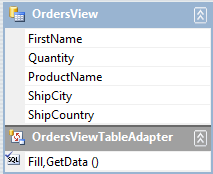
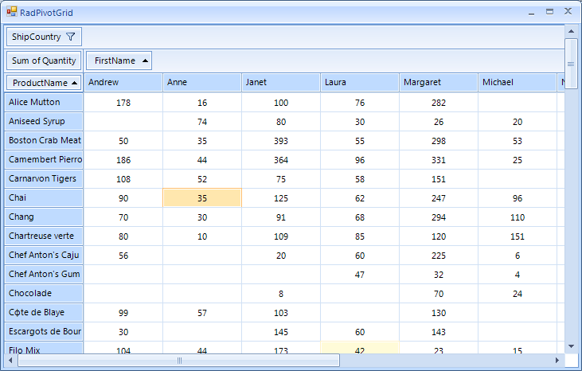

Design time data binding
You can add RadPivotGrid to your form from the toolbox of Visual Studio. The next thing you would do is assign it with some data. RadPivotGrid supports the standard binding functionality known to you from other WinForms controls. You can use its DataSource property to create or use existing data source. This property can be found both in the Smart Tag menu of RadPivotGrid and in Visual Studio’s Properties window.
Adding aggregate and group descriptors
To define how your data will be displayed, you should edit the ColumnGroupDescriptions RowGroupDescriptions and AggregateDescriptions collections. Again, you can do this from the Smart Tag menu of RadPivotGrid. When you edit these collections, a standard Collection Editor dialog will open. You can choose the field name as well as some other properties depending on the type of the descriptor you are adding.

Adding report filters
Report filters are added via the same Smart Tag menu by editing the FilterDescriptors collection. However, the filter area is hidden by default and to show it, you should set the ShowFilterArea property of RadPivotGrid to true. This will show Report filters area described above and you will be able to select or deselect which records to participate in the report.

Use case scenario
For the purposes of this sample we will use the Northwind database but we will create a
custom table adapter which selects from the Employees, Orders, Order Details and Products
tables in order to get data that would fit displaying in RadPivotGrid. To do this, select
* Add -> TableAdapter* from the context menu in the DataSet designer and complete the steps of the wizard.
Here is how the SELECT command of our custom table adapter looks like:
SELECT Employees.FirstName, [Order Details].Quantity, Products.ProductName, Orders.ShipCity, Orders.ShipCountry
FROM (((Employees INNER JOIN
Orders ON Employees.EmployeeID = Orders.EmployeeID) INNER JOIN
[Order Details] ON Orders.OrderID = [Order Details].OrderID) INNER JOIN
Products ON [Order Details].ProductID = Products.ProductID)
And this is how the fields of our custom TableAdapter are arranged:
Now let’s say we want to see a statistic of how much of each product has each employee sold. Additionally, we want to allow those who preview the statistics to filter the results by country. To do this, we take the following steps:
Add a RadPivotGrid to the form
Select the table adapter we have just created as a DataSource
Add an aggregate descriptor for the field Quantity
Add a column group descriptor for the field FirstName
Add a row group descriptor for the field ProductName
Set the ShowFilterArea property to true and add a filter descriptor for the field ShipCountry
Run the project
The result is shown on the following picture: